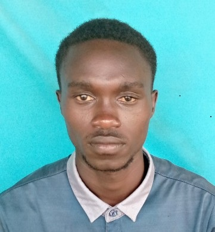

|

CONTACTMuni UniversityArua-Muni - Ucoko Road P. O. Box 725, Arua City Phone: +256-764-590-567 Email: oyiletimo@gmail.com MISSIONTo provide support and training to end-users to ensure effective use of IT resources, integrating the variuos IT systems and platforms to streamline operations and improve efficieny. LEADERSHIPI served as the Bible study cordinator in Scripture Union Mvara Secondary during my Advanced Level. Also served as the quiet time cordinator in the same school during my Ordinary Level. I also performed the duty of ushering at the place of worship during my "O" level study. As a football lover i captained our football club from my primary school. |
OYILE
|